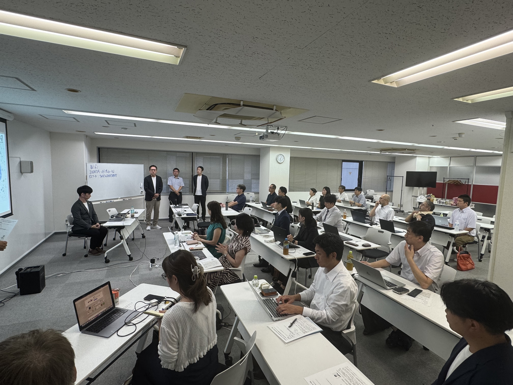
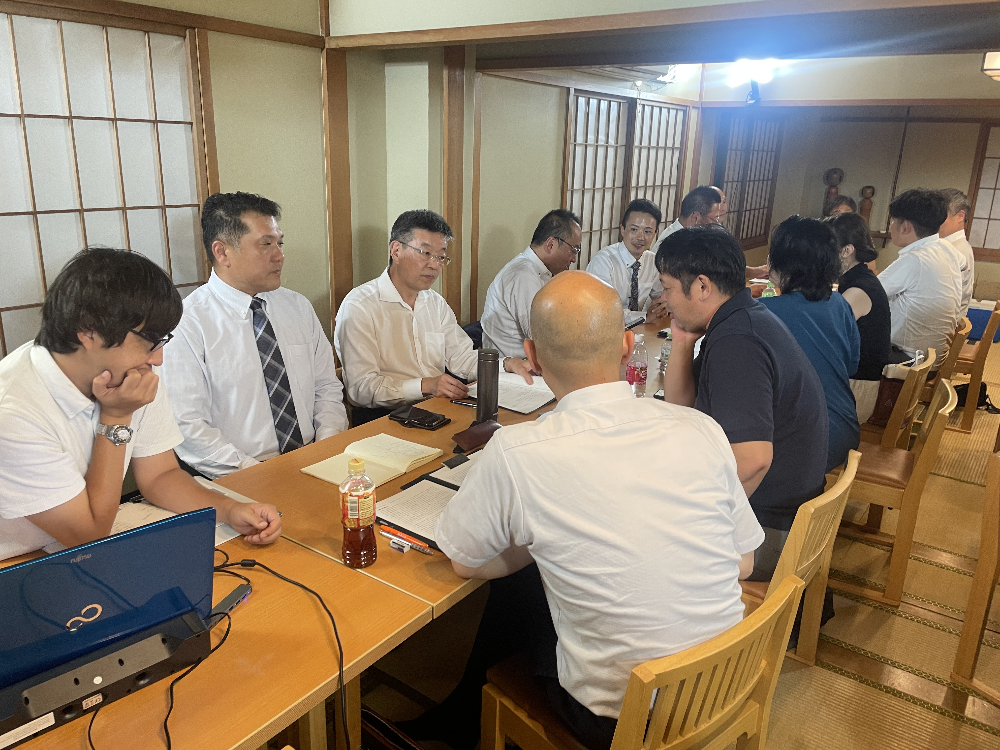
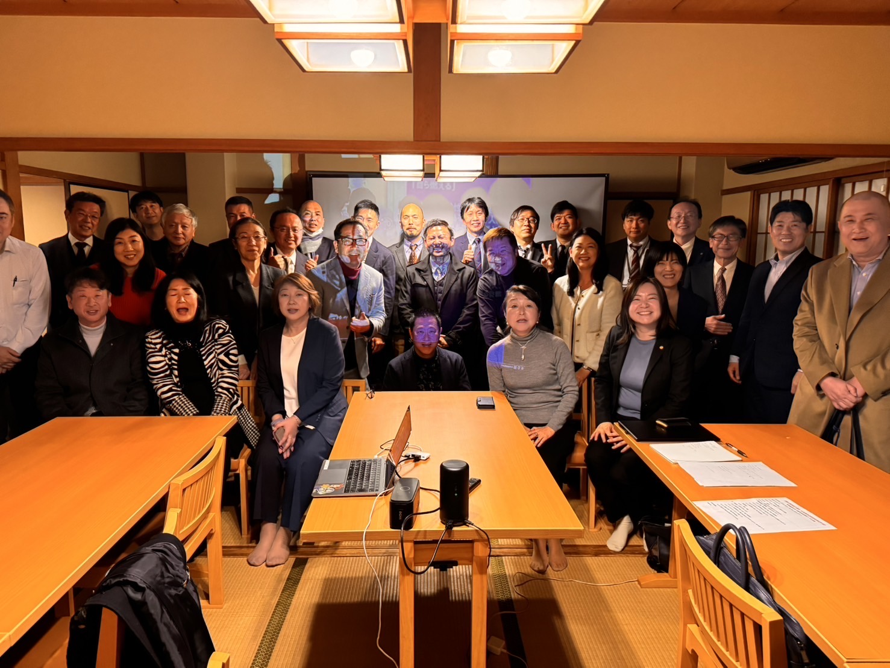
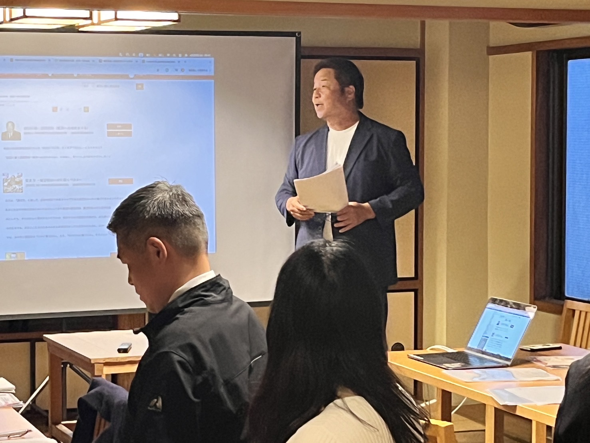
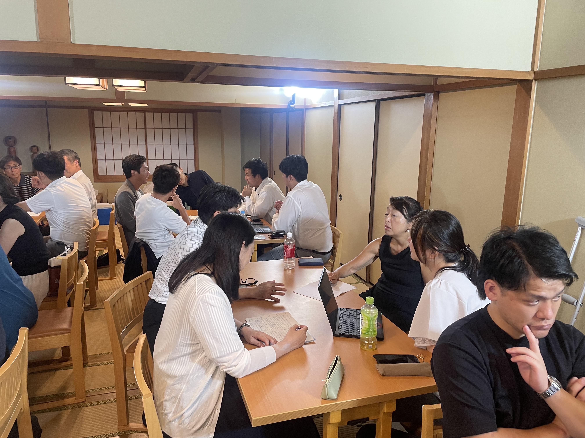
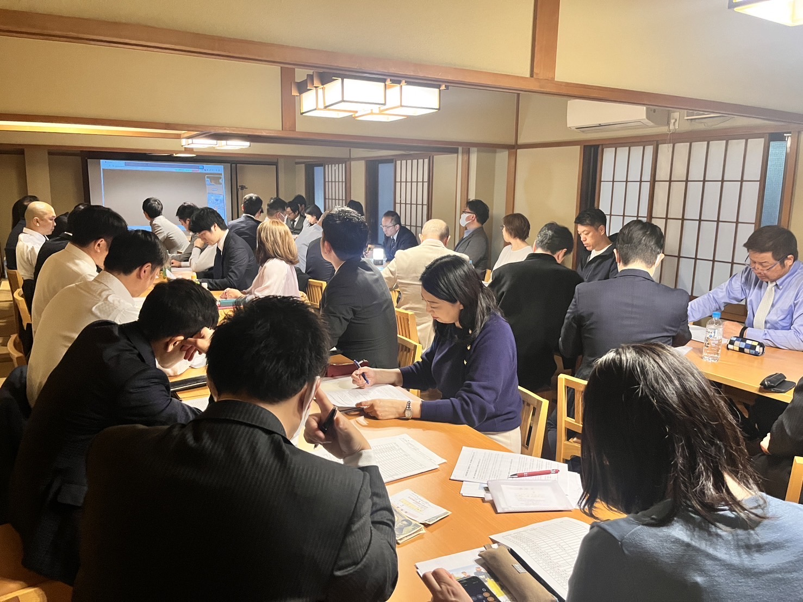

1
学ぶ
稲盛和夫氏の講話や経営12ヶ条、フィロソフィなどから経営の原理原則を学びます。
盛心実践会千葉は、稲盛和夫氏の経営哲学を学び、仕事・経営・人生での実践につなげる勉強会です。経営者・後継者・会社幹部を中心に、互いに学び合っています。
第4条を講話とグループディスカッションから深掘りします。
ベクトルを合わせる
社員全員の力を一つにする考え方を学びます。
本音で語り合い、学びと自身の経営課題を深めます。
稲盛経営哲学を共に学び、自社の経営に照らし合わせ、仲間と語り合いながら実践につなげます。
稲盛和夫氏の講話や経営12ヶ条、フィロソフィなどから経営の原理原則を学びます。
グループディスカッションや経営体験発表で、自社の課題を深く考えます。
学びを会社へ持ち帰り、行動し、結果につなげることを大切にしています。
盛心実践会千葉は、稲盛和夫氏の人生哲学・経営哲学を真剣に学び、学んだことを自らの経営や人生に実践することで、心を高め、経営を伸ばすことを目的とした経営者の学びの場です。
前身となる盛和塾は2019年をもって解散しました。しかし、盛和塾で学んだ多くの仲間には、稲盛塾長から学んだ経営哲学をこれからも学び続け、次の世代へつないでいきたいという強い思いがありました。その思いを受け継ぎ、盛心実践会千葉として現在も学びを続けています。
私たちが大切にしているのは、「学んで終わり」にしないことです。
経営12ヶ条やフィロソフィ、経営体験発表などから学び、それを自社の経営に照らし合わせ、仲間と本音で語り合う。そして、自らの会社に持ち帰って実践する。
一人で学ぶだけでは気づけないことも、志を同じくする仲間と切磋琢磨することで、より深い学びへと変わっていきます。
心を高め、経営を伸ばす。
稲盛和夫氏が残された経営哲学を学び続け、実践を通じて会社を良くし、社員を幸せにし、社会に貢献できる経営者になることを目指しています。
代表世話人 田中 剛・張本 哲也
講話を聴くだけではありません。自分で考え、仲間と語り合い、経営に持ち帰る。実際の勉強会の様子です。

講話や経営体験から、経営の本質を学びます。

少人数で意見を交わし、自分の経営に照らして考えます。

立場や業種を越えた仲間とのつながりも大切にしています。

自らの実践や経験を発表し、互いの経営から学びます。

仲間と本音で語り合い、自分自身の実践を深めます。

多くの仲間と学びを重ね、実践へつなげていきます。
経営の原理原則を、自社の目標・計画・実行へ。
「人として何が正しいか」を軸に、判断基準と組織づくりを考えます。
仲間の実践から学び、自社の経営課題を具体的に掘り下げます。
初めての方はオブザーバーとして、実際の勉強会を体験できます。
会の雰囲気や学び方を知りたい方は、まずはこちらから。
次回勉強会に参加する継続して稲盛経営哲学を学び、実践を深めたい方向けです。
年会費：一般会員 50,000円
塾生企業の役員・従業員 35,000円
盛和塾機関紙や勉強会資料など、塾生限定の学びと資料をまとめたページです。
オブザーバー参加、正式入会、勉強会についてのご質問など、お気軽にお問い合わせください。